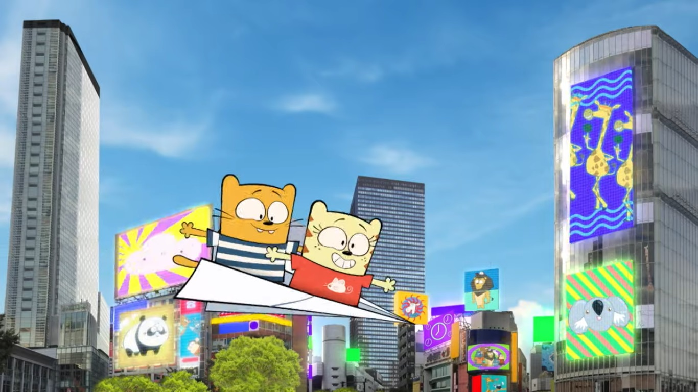
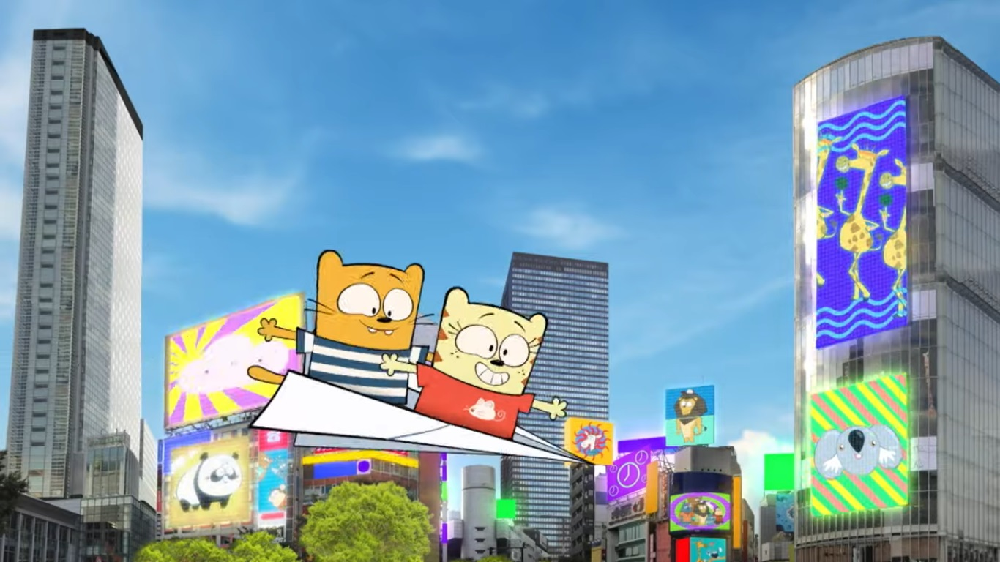

PERSONALIDAD

Ollie es un gato divertido de 6 años, que junto a
su amiga Moon viajan por todo el mundo y
aprenden sobre diferentes sacrificios. Alegre y
super curioso, metódico y planificado.

Ollie es un gato divertido de 6 años, que junto a
su amiga Moon viajan por todo el mundo y
aprenden sobre diferentes sacrificios. Alegre y
super curioso, metódico y planificado.

Enérgico, de estatura pequeña y muy
inquieto. Su personaje simboliza un gato
bebe anaranjado, siempre con su característica
remera rayada azul y blanca y acompañado
de su amiga Moon y su amigo Caracacol...

SERIE ANIMADA
Ollie & Moon Show trata sobre dos gatos de seis
años, Ollie y Moon, junto con su compañero de
viaje Stanley, el caracol, que viajan por el mundo
y aprenden sobre diferentes culturas.


 
